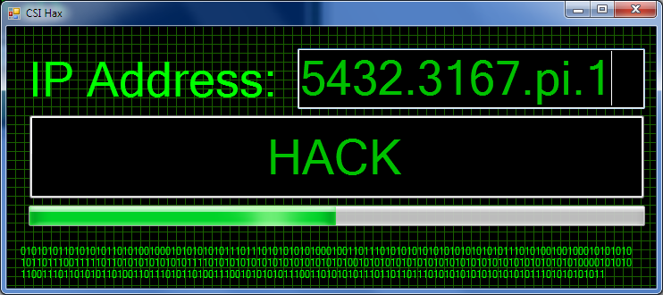

Since the 20th century the world has been engaging in what is called the Knowledge
economy. Knowledge manifests as content which has monetary value. Information is valuable
because it gives companies an advantage from a business standpoint. Hackers are people with
profound technical knowledge that use their skills to steal information such as ideas, inventions,
and creative expressions by exploiting vulnerabilities in computer software. “As technology
evolves so do the threats, often at a pace that is faster than companies can keep track of”
(Mondaq).

Financial, engineering, and scientific companies are at risk at being attacked by cyber
criminals because they hold immense amounts of valuable data and information. According to
research conducted by IMB in 2015, 100 million medical records were were compromised
(Mondaq). Medical records are valuable because pharmaceutical and health insurance companies
generate substantial profits worldwide. By knowing what ailments people suffer from companies
can efficiently target people to make health related purchases. Business intelligence is a valuable
commodity because a company’s unique set of business processes makes them profitable in a
competitive marketplace.